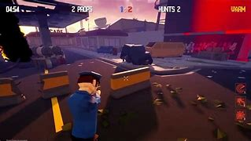
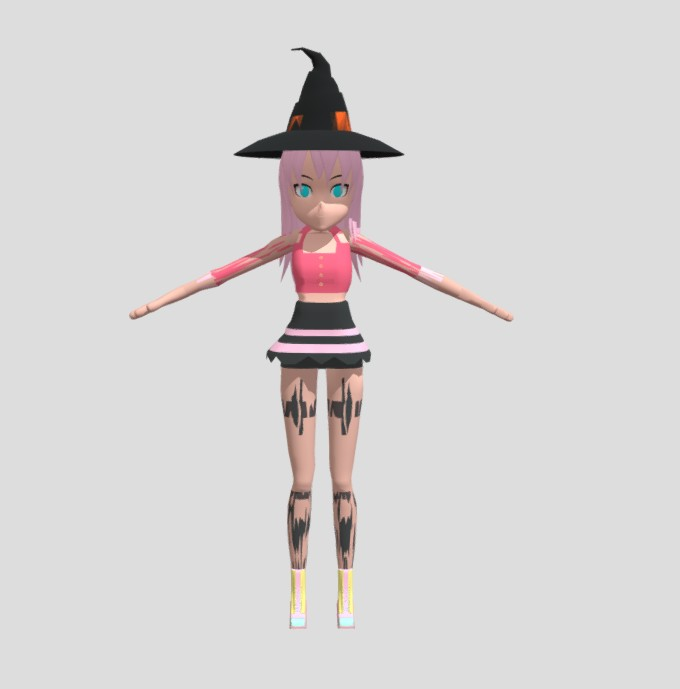
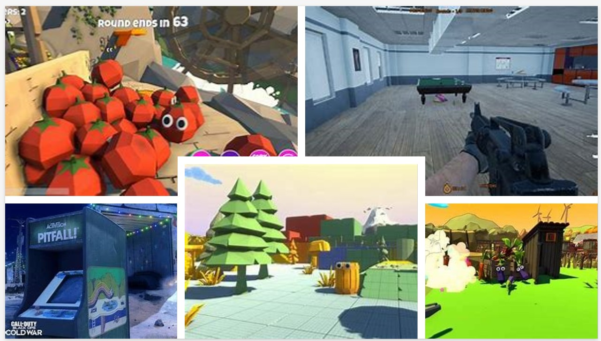
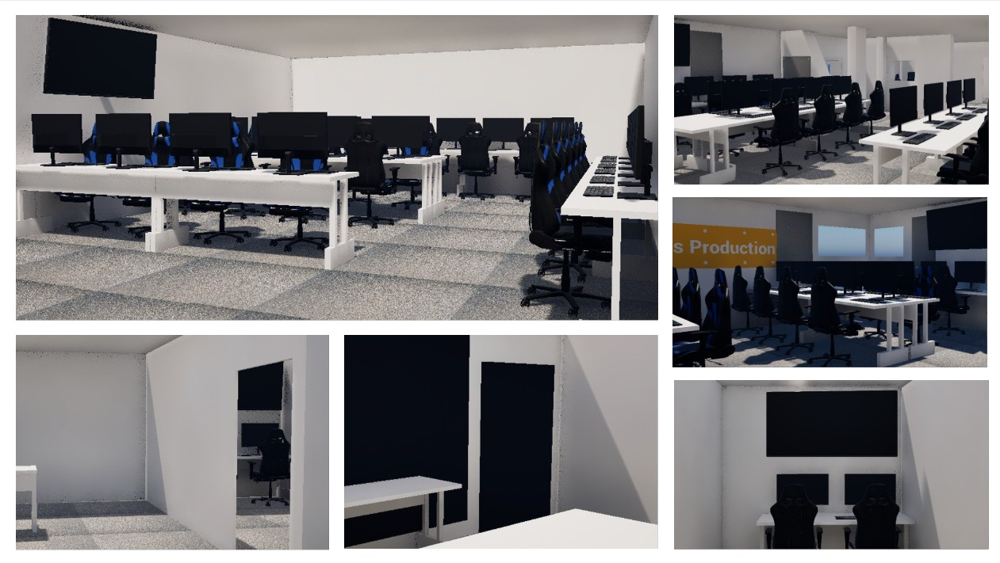

Gameplay
These videos are recordings that showcase the final product that i created being played in real time with some editing for multiple POVs. These videos show the full game loop of a prop hunt game. The start of the game it chooses who becomes a prop and who becomes a hunter. After the players have been assigned. the props have a minute to hide and blend in with the level. After the first minute is over the hunters have 19 minutes to search and eliminate all hidden props. There is also a meme gameplay video using the same video but with some meme audio over it to add a bit of comedy to the video.
Voice Overs and Code Embed
Prop Character
Hunter Character
These videos showcase some of the code used to create my multiplayer prop hunt game going from player coding for hunters and props allowing them to die or become a prop. It also shows the main game loop and how it controls the game with game time length, game restarting as well as knowing how many props and hunters are left. The second video showcases the coding for the local multiplayer going from UI to the actual connecting of players. I also used a website called BlueprintUE to embed some of the code used in my game.
Iterations
Here showcases how the map came to together starting with the basic map layout to then adding all the props this allowed to me visualize how the game would look and how it would help the game play out. I decided to create the colleges game hub for the level the first video showcases the basic layout with nothing but walls to layout how the map will look and then in the second video this showcases the map with the props in the level. Using this approach I was able to build a level more easily as I started by creating a rough layout first.
Linked back to Research
 
 
Models
These are some of the models used in my game. The Door and the monitor was sourced premade assets, where the desk and the character was created by me using blender. I decided on creating my own character model because it was a fun way to have the hunter look how I want it too as well as the desk was easy to model to look like how the games hub desks look. I used premade assets as I didnt have the time to create every asset need for my game so sourced a bunch of models of FAB on Unreal Engine.
Audio
This is the music I used for my main menu I used a website called SUNO to ai generate music, I give it a prompt to create a song about playing prop hunt games.
I used a website called Pixabay to source all my sound effects. This sound showcases the sound it plays when a hunter is attacking a player which both the props and hunters can hear during the game.
This sound showcases the sound it plays when a prop is taking damage allowing both the props and hunters to know when damage is being applied and to give the hunters the knowledge they found a prop. I used a Pixabay to source this audio
This sound showcases the sound it plays when a player is jumping allowing both the props and hunters to know when they are jumping or if someone nearby is jumping this allows the player to have an audio queue when they jump and to know if there is someone nearby. I used a Pixabay to source this audio
This sound showcases the sound it plays when a player is walking allowing both the props and hunters to know when they are moving around or if someone is moving around close to them this allows the player to have an audio queue when they move and to know if there is someone nearby. I used a Pixabay to source this audio.
Cozy Game Product